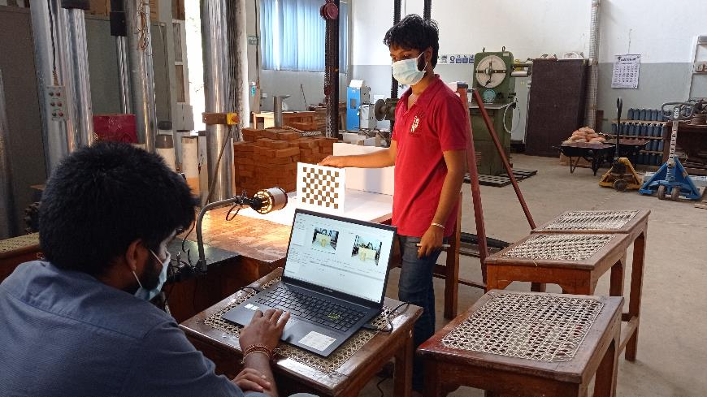
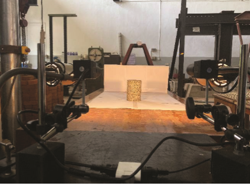
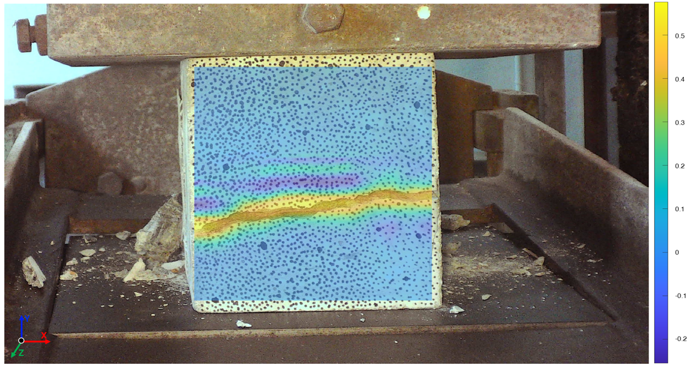
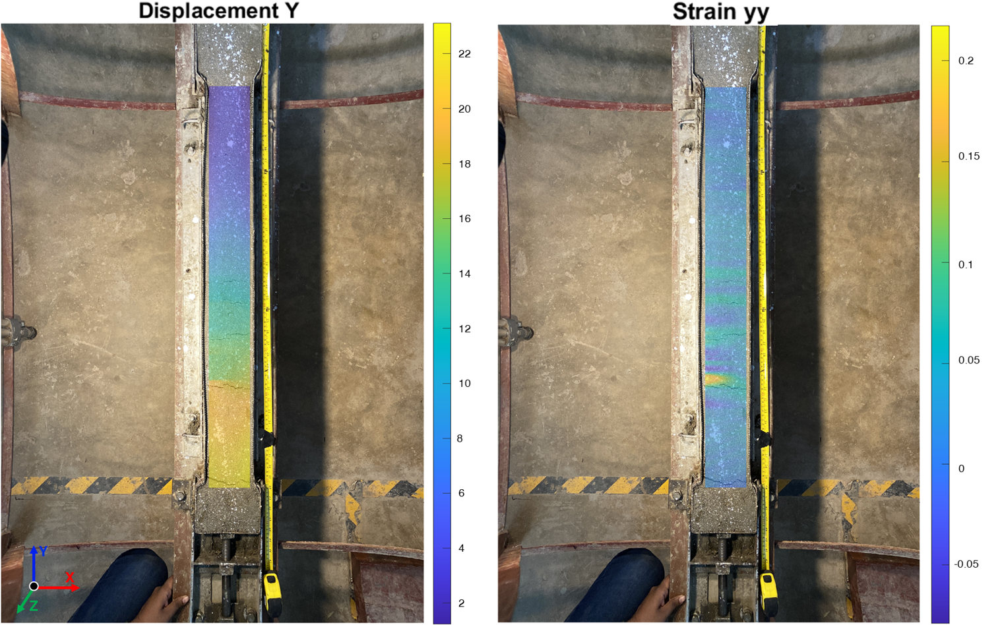

This project developed a Digital Image Correlation (DIC) based algorithm capable of computing full-field displacement and strain from photographs taken by ordinary digital cameras. Unlike commercial DIC systems that typically require specialised hardware, the method was designed to work with widely available equipment, making it a practical, low-cost tool for laboratory-scale civil engineering experiments.
A GUI-driven standalone application was built in MATLAB, allowing users to load stereo image pairs and obtain full-field 3D displacement and strain maps without needing to interact with the underlying code. The system was validated through a series of physical tests, including rigid body motion tests, tensile and compression tests, and trial measurements of plastic shrinkage cracks in mortar.




L. S. Sarma and C. Mallikarachchi, "3D Full-field Deformation Measurement using Stereo Vision," in 2022 Moratuwa Engineering Research Conference (MERCon), IEEE, pp. 1–6. [Link]
S. Nadarajah, L. S. Sarma, and C. Mallikarachchi, "Semi-Automated Crack Detection Using Computer Vision," in Proceedings of the Annual Sessions of the Society of Structural Engineers Sri Lanka, Colombo, Sri Lanka, Aug. 2020, pp. 38–43. [Link]